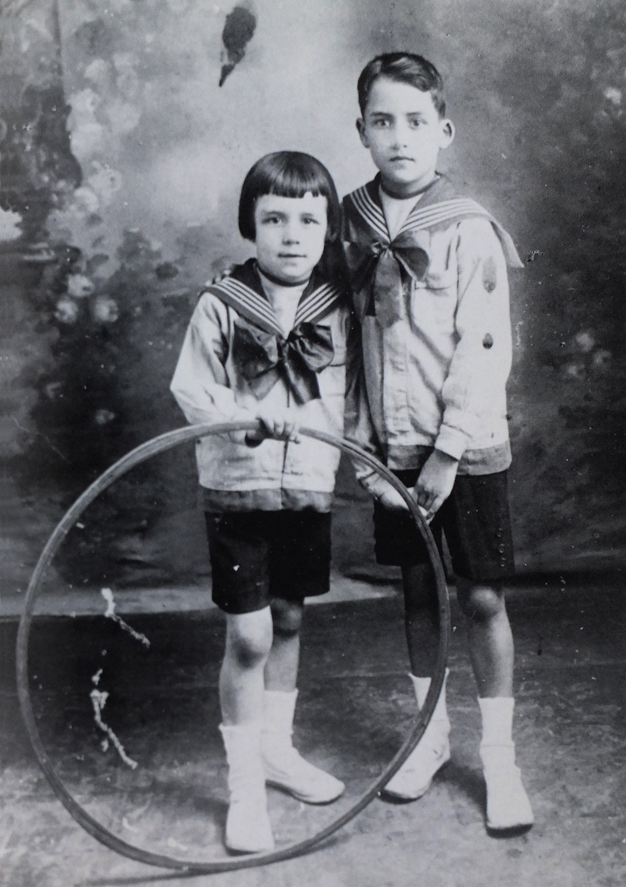
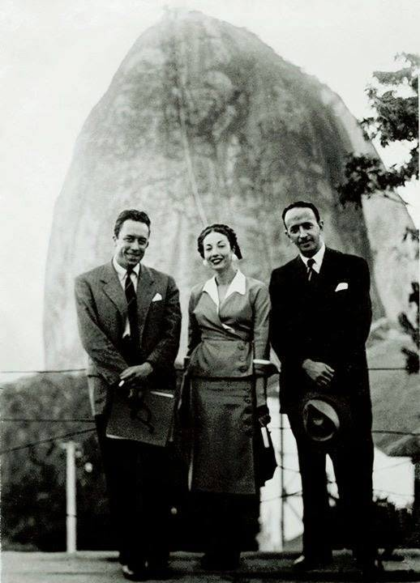
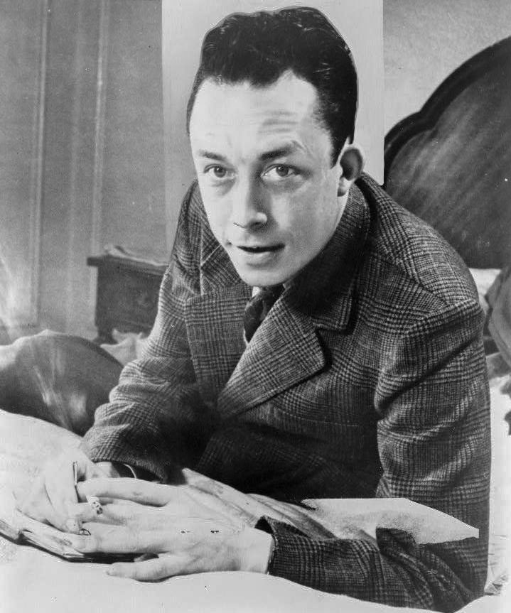
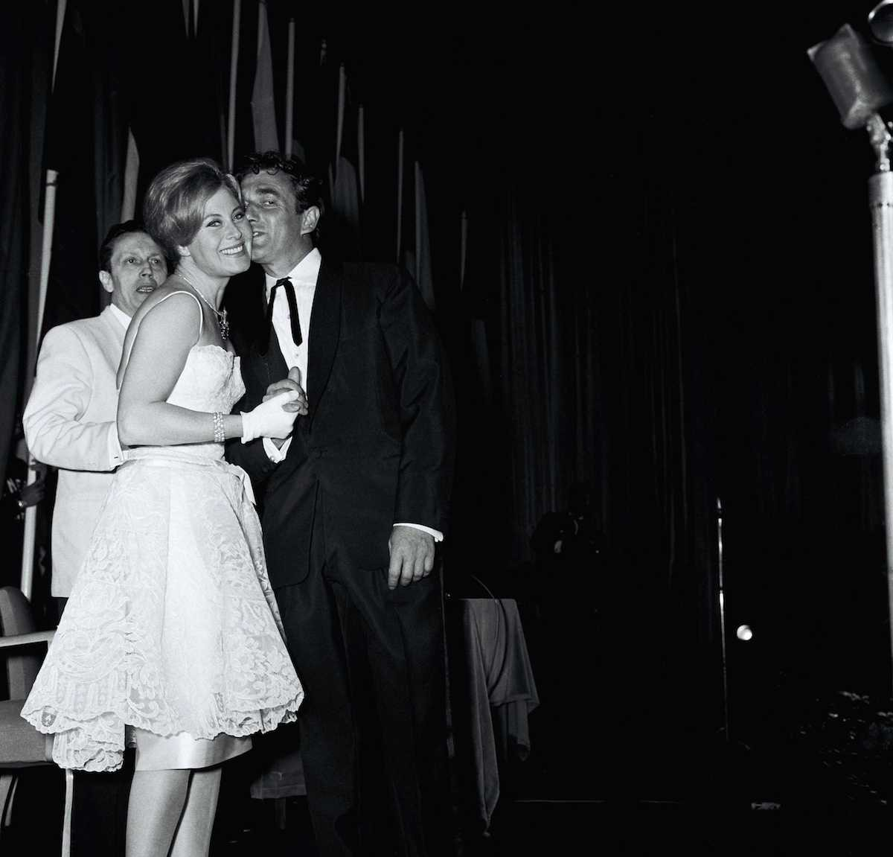
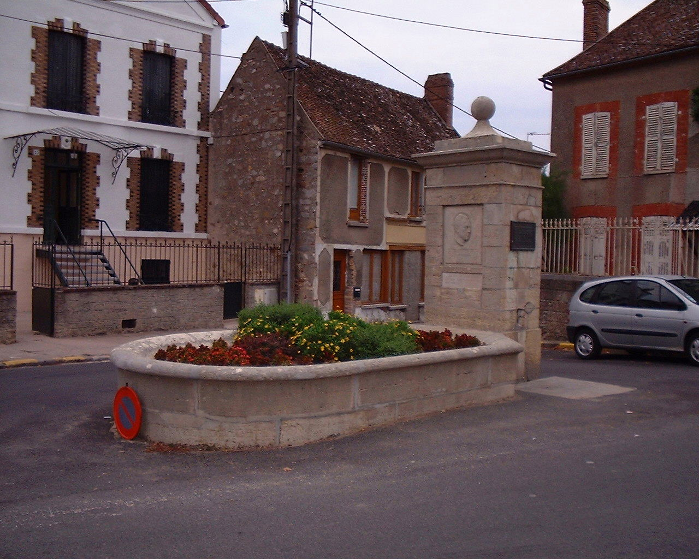

Biography
1913 - 1960 · From Algerian poverty to Nobel Prize
Life Timeline
Click any event to explores details
Published both The Stranger (novel) and The Myth of Sisyphus (philosophical essay) in the same year[4]. These works established him as a major voice in existential literature. The Stranger's famous opening -- "Mother died today" -- became iconic [4].
Read and Learn about The Stranger →Life in Images
Albert Camus Through the Years





Early Life
Born into poverty in French Algeria, Camus never knew his father who died in World War 1[1]. Despite hardship, he excelled academically with help from teachers who recognised his talent[3].
Philosophy
Though often associated with existentialism, Camus rejected the label[3]. His philosophy of the absurd argued that life has no inherent meaning, but we must embrace it anyway[8].
Political Stance
Active in left-wing politics, Resistance fighter during World War 2[2], but broke with Sartre over Soviet communism[3]. Advocated for Algerian independence but struggled with the violence involved[1].
Personal Life
Married twice, had two children[2]. Lifelong battle with tuberculosis[1]. Passionate about football (soccer), theatre and the Mediterranean sun. Died tragically at 46[2].